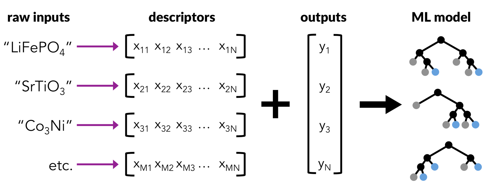
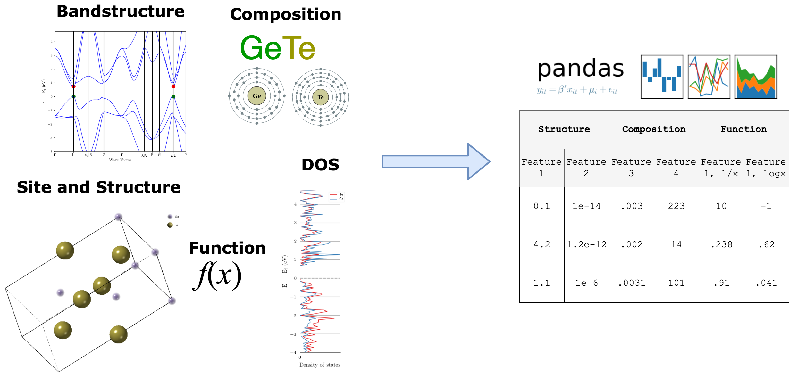
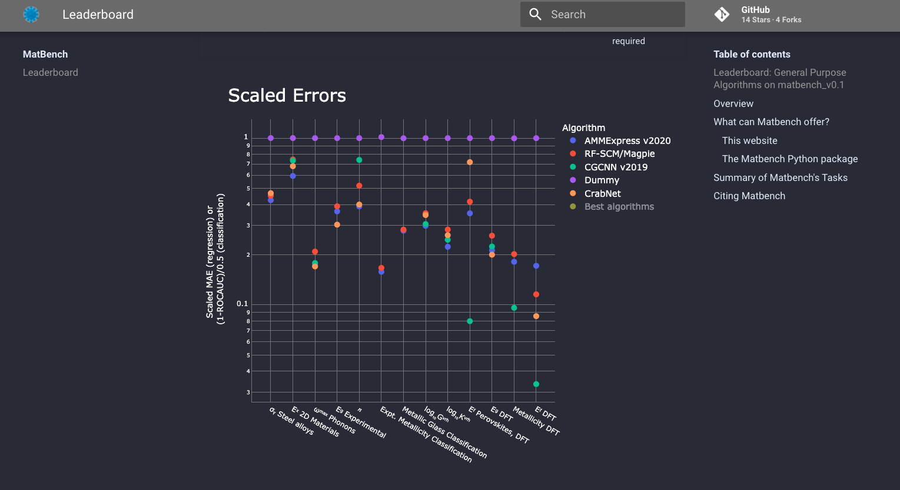

Featurizing molecules and materials for chemical engineering
Contents
Note
This lecture is going to:
Discuss why and how we can generate descriptors for materials problems
Introduce several descriptors/features that can be used for:
chemical compositions
structure (atomic xyz structure) features
…
Demonstrate one package for generating features (
matminer)Fit a simple linear model to a material science dataset
Featurizing molecules and materials for chemical engineering#
We’ve done a lot of work with polynomial features so far, but chemical engineering is full of examples where it’s not clear exactly what the right features are. In this lecture we’ll talk about how to turn data like chemical composition or atomic structures into features that can be used with common machine learning models that expect feature vectors (like our sklearn models).
Demonstration: Materials features using matminer#
A material science workflow looks very similar to the ones we’ve done so far, but the starting point is different!
Take raw inputs, such as a list of compositions, and an associated target property to learn.
Convert the raw inputs into descriptors or features that can be learned by machine learning algorithms.
Train a machine learning model on the data.
Plot and analyze the performance of the model.

There are many python packages available to featurize materials or molecules. The matminer package has been developed to help make machine learning of materials properties easy and hassle free. The aim of matminer is to connect materials data with data mining algorithms and data visualization.
See also
Many more tutorials on how to use matminer (beyond the scope of this example) are available in the matminer_examples repository, available here.
Example materials science dataset (computational dielectric properties of inorganic crystals)#
Matminer interfaces with many materials databases, including:
Materials Project
Citrine
AFLOW
Materials Data Facility (MDF)
Materials Platform for Data Science (MPDS)
In addition, it also includes datasets from published literature. Matminer hosts a repository of ~45 datasets which comes from published and peer-reviewed machine learning investigations of materials properties or publications of high-throughput computing studies.
A list of the literature-based datasets can be printed using the get_available_datasets() function. This also prints information about what the dataset contains, such as the number of samples, the target properties, and how the data was obtained (e.g., via theory or experiment).
See also
More information on accessing other materials databases are detailed in the matminer_examples repository.
Loading the dielectric dataset#
All datasets can be loaded using the load_dataset() function and the database name. To save installation space, the datasets are not automatically downloaded when matminer is installed. Instead, the first time the dataset is loaded, it will be downloaded from the internet and stored in the matminer installation directory.
Let’s say we’re interested in the dielectric_constant dataset, which contains 1,056 structures with dielectric properties calculated with DFPT-PBE. We can download it with the load_dataset function.
We’ll set an environment variable MATMINER_DATA which will tell matminer to download all our dataset to a directory ./data. If you are running this locally, you usually don’t need to set this variable as matminer will download the dataset directly to your matminer source code folder.
# Load the dielectric dataset
from matminer.datasets import load_dataset
df = load_dataset("dielectric_constant")
Fetching dielectric_constant.json.gz from https://ndownloader.figshare.com/files/13213475 to /opt/conda/lib/python3.9/site-packages/matminer/datasets/dielectric_constant.json.gz
Fetching https://ndownloader.figshare.com/files/13213475 in MB: 0%| | 0.0/0.885392 [00:00<?, ?MB/s]
Fetching https://ndownloader.figshare.com/files/13213475 in MB: 0.8867839999999999MB [00:00, 337.27MB/s]
?matmin
Object `matmin` not found.
We can get some more detailed information about this dataset using the get_all_dataset_info(<dataset>) function from matminer.
from matminer.datasets import get_all_dataset_info
print(get_all_dataset_info("dielectric_constant"))
Dataset: dielectric_constant
Description: 1,056 structures with dielectric properties, calculated with DFPT-PBE.
Columns:
band_gap: Measure of the conductivity of a material
cif: optional: Description string for structure
e_electronic: electronic contribution to dielectric tensor
e_total: Total dielectric tensor incorporating both electronic and ionic contributions
formula: Chemical formula of the material
material_id: Materials Project ID of the material
meta: optional, metadata descriptor of the datapoint
n: Refractive Index
nsites: The \# of atoms in the unit cell of the calculation.
poly_electronic: the average of the eigenvalues of the electronic contribution to the dielectric tensor
poly_total: the average of the eigenvalues of the total (electronic and ionic) contributions to the dielectric tensor
poscar: optional: Poscar metadata
pot_ferroelectric: Whether the material is potentially ferroelectric
space_group: Integer specifying the crystallographic structure of the material
structure: pandas Series defining the structure of the material
volume: Volume of the unit cell in cubic angstroms, For supercell calculations, this quantity refers to the volume of the full supercell.
Num Entries: 1056
Reference: Petousis, I., Mrdjenovich, D., Ballouz, E., Liu, M., Winston, D.,
Chen, W., Graf, T., Schladt, T. D., Persson, K. A. & Prinz, F. B.
High-throughput screening of inorganic compounds for the discovery
of novel dielectric and optical materials. Sci. Data 4, 160134 (2017).
Bibtex citations: ['@Article{Petousis2017,\nauthor={Petousis, Ioannis and Mrdjenovich, David and Ballouz, Eric\nand Liu, Miao and Winston, Donald and Chen, Wei and Graf, Tanja\nand Schladt, Thomas D. and Persson, Kristin A. and Prinz, Fritz B.},\ntitle={High-throughput screening of inorganic compounds for the\ndiscovery of novel dielectric and optical materials},\njournal={Scientific Data},\nyear={2017},\nmonth={Jan},\nday={31},\npublisher={The Author(s)},\nvolume={4},\npages={160134},\nnote={Data Descriptor},\nurl={http://dx.doi.org/10.1038/sdata.2016.134}\n}']
File type: json.gz
Figshare URL: https://ndownloader.figshare.com/files/13213475
SHA256 Hash Digest: 8eb24812148732786cd7c657eccfc6b5ee66533429c2cfbcc4f0059c0295e8b6
(Recap of pandas) Manipulating and examining pandas DataFrame objects#
The datasets are made available as pandas DataFrame objects.
The head() function prints a summary of the first few rows of a data set. You can scroll across to see more columns. From this, it is easy to see the types of data available in in the dataset.
df.head()
| material_id | formula | nsites | space_group | volume | structure | band_gap | e_electronic | e_total | n | poly_electronic | poly_total | pot_ferroelectric | cif | meta | poscar | |
|---|---|---|---|---|---|---|---|---|---|---|---|---|---|---|---|---|
| 0 | mp-441 | Rb2Te | 3 | 225 | 159.501208 | [[1.75725875 1.2425695 3.04366125] Rb, [5.271... | 1.88 | [[3.44115795, -3.097e-05, -6.276e-05], [-2.837... | [[6.23414745, -0.00035252, -9.796e-05], [-0.00... | 1.86 | 3.44 | 6.23 | False | #\#CIF1.1\n###################################... | {u'incar': u'NELM = 100\nIBRION = 8\nLWAVE = F... | Rb2 Te1\n1.0\n5.271776 0.000000 3.043661\n1.75... |
| 1 | mp-22881 | CdCl2 | 3 | 166 | 84.298097 | [[0. 0. 0.] Cd, [ 4.27210959 2.64061969 13.13... | 3.52 | [[3.34688382, -0.04498543, -0.22379197], [-0.0... | [[7.97018673, -0.29423886, -1.463590159999999]... | 1.78 | 3.16 | 6.73 | False | #\#CIF1.1\n###################################... | {u'incar': u'NELM = 100\nIBRION = 8\nLWAVE = F... | Cd1 Cl2\n1.0\n3.850977 0.072671 5.494462\n1.78... |
| 2 | mp-28013 | MnI2 | 3 | 164 | 108.335875 | [[0. 0. 0.] Mn, [-2.07904300e-06 2.40067320e+... | 1.17 | [[5.5430849, -5.28e-06, -2.5030000000000003e-0... | [[13.80606079, 0.0006911900000000001, 9.655e-0... | 2.23 | 4.97 | 10.64 | False | #\#CIF1.1\n###################################... | {u'incar': u'NELM = 100\nIBRION = 8\nLWAVE = F... | Mn1 I2\n1.0\n4.158086 0.000000 0.000000\n-2.07... |
| 3 | mp-567290 | LaN | 4 | 186 | 88.162562 | [[-1.73309900e-06 2.38611186e+00 5.95256328e... | 1.12 | [[7.09316738, 7.99e-06, -0.0003864700000000000... | [[16.79535386, 8.199999999999997e-07, -0.00948... | 2.65 | 7.04 | 17.99 | False | #\#CIF1.1\n###################################... | {u'incar': u'NELM = 100\nIBRION = 8\nLWAVE = F... | La2 N2\n1.0\n4.132865 0.000000 0.000000\n-2.06... |
| 4 | mp-560902 | MnF2 | 6 | 136 | 82.826401 | [[1.677294 2.484476 2.484476] Mn, [0. 0. 0.] M... | 2.87 | [[2.4239622, 7.452000000000001e-05, 6.06100000... | [[6.44055613, 0.0020446600000000002, 0.0013203... | 1.53 | 2.35 | 7.12 | False | #\#CIF1.1\n###################################... | {u'incar': u'NELM = 100\nIBRION = 8\nLDAUTYPE ... | Mn2 F4\n1.0\n3.354588 0.000000 0.000000\n0.000... |
Sometimes, if a dataset is very large, you will be unable to see all the available columns. Instead, you can see the full list of columns using the columns attribute:
df.columns
Index(['material_id', 'formula', 'nsites', 'space_group', 'volume',
'structure', 'band_gap', 'e_electronic', 'e_total', 'n',
'poly_electronic', 'poly_total', 'pot_ferroelectric', 'cif', 'meta',
'poscar'],
dtype='object')
A pandas DataFrame includes a function called describe() that helps determine statistics for the various numerical/categorical columns in the data. Note that the describe() function only describes numerical columns by default.
Sometimes, the describe() function will reveal outliers that indicate mistakes in the data.
df.describe()
| nsites | space_group | volume | band_gap | n | poly_electronic | poly_total | |
|---|---|---|---|---|---|---|---|
| count | 1056.000000 | 1056.000000 | 1056.000000 | 1056.000000 | 1056.000000 | 1056.000000 | 1056.000000 |
| mean | 7.530303 | 142.970644 | 166.420376 | 2.119432 | 2.434886 | 7.248049 | 14.777898 |
| std | 3.388443 | 67.264591 | 97.425084 | 1.604924 | 1.148849 | 13.054947 | 19.435303 |
| min | 2.000000 | 1.000000 | 13.980548 | 0.110000 | 1.280000 | 1.630000 | 2.080000 |
| 25% | 5.000000 | 82.000000 | 96.262337 | 0.890000 | 1.770000 | 3.130000 | 7.557500 |
| 50% | 8.000000 | 163.000000 | 145.944691 | 1.730000 | 2.190000 | 4.790000 | 10.540000 |
| 75% | 9.000000 | 194.000000 | 212.106405 | 2.885000 | 2.730000 | 7.440000 | 15.482500 |
| max | 20.000000 | 229.000000 | 597.341134 | 8.320000 | 16.030000 | 256.840000 | 277.780000 |
Indexing the dataset#
We can access a particular column of DataFrame by indexing the object using the column name. For example:
df["band_gap"]
0 1.88
1 3.52
2 1.17
3 1.12
4 2.87
...
1051 0.87
1052 3.60
1053 0.14
1054 0.21
1055 0.26
Name: band_gap, Length: 1056, dtype: float64
You can also access multiple columns by indexing with a list of column names rather than a single column name:
Alternatively, we can access a particular row of a Dataframe using the iloc attribute.
df.iloc[100]
material_id mp-7140
formula SiC
nsites 4
space_group 186
volume 42.005504
structure [[-1.87933700e-06 1.78517223e+00 2.53458835e...
band_gap 2.3
e_electronic [[6.9589498, -3.29e-06, 0.0014472600000000001]...
e_total [[10.193825310000001, -3.7090000000000006e-05,...
n 2.66
poly_electronic 7.08
poly_total 10.58
pot_ferroelectric False
cif #\#CIF1.1\n###################################...
meta {u'incar': u'NELM = 100\nIBRION = 8\nLWAVE = F...
poscar Si2 C2\n1.0\n3.092007 0.000000 0.000000\n-1.54...
Name: 100, dtype: object
Filtering the dataset#
Pandas DataFrame objects make it very easy to filter the data based on a specific column. We can use the typical Python comparison operators (==, >, >=, <, etc) to filter numerical values. For example, let’s find all entries where the cell volume is greater than 580. We do this by filtering on the volume column.
Note that we first produce a boolean mask – a series of True and False depending on the comparison. We can then use the mask to filter the DataFrame.
mask = df["volume"] >= 580
df[mask]
| material_id | formula | nsites | space_group | volume | structure | band_gap | e_electronic | e_total | n | poly_electronic | poly_total | pot_ferroelectric | cif | meta | poscar | |
|---|---|---|---|---|---|---|---|---|---|---|---|---|---|---|---|---|
| 206 | mp-23280 | AsCl3 | 16 | 19 | 582.085309 | [[0.13113333 7.14863883 9.63476955] As, [2.457... | 3.99 | [[2.2839161900000002, 0.00014519, -2.238000000... | [[2.49739759, 0.00069379, 0.00075864], [0.0004... | 1.57 | 2.47 | 3.30 | False | #\#CIF1.1\n###################################... | {u'incar': u'NELM = 100\nIBRION = 8\nLWAVE = F... | As4 Cl12\n1.0\n4.652758 0.000000 0.000000\n0.0... |
| 216 | mp-9064 | RbTe | 12 | 189 | 590.136085 | [[6.61780282 0. 0. ] Rb, [1.750... | 0.43 | [[3.25648277, 5.9650000000000007e-05, 1.57e-06... | [[5.34517928, 0.00022474000000000002, -0.00018... | 2.05 | 4.20 | 6.77 | False | #\#CIF1.1\n###################################... | {u'incar': u'NELM = 100\nIBRION = 8\nLWAVE = F... | Rb6 Te6\n1.0\n10.118717 0.000000 0.000000\n-5.... |
| 219 | mp-23230 | PCl3 | 16 | 62 | 590.637274 | [[6.02561815 8.74038483 7.55586375] P, [2.7640... | 4.03 | [[2.39067769, 0.00017593, 8.931000000000001e-0... | [[2.80467218, 0.00034093000000000003, 0.000692... | 1.52 | 2.31 | 2.76 | False | #\#CIF1.1\n###################################... | {u'incar': u'NELM = 100\nIBRION = 8\nLWAVE = F... | P4 Cl12\n1.0\n6.523152 0.000000 0.000000\n0.00... |
| 251 | mp-2160 | Sb2Se3 | 20 | 62 | 597.341134 | [[3.02245275 0.42059268 1.7670481 ] Sb, [ 1.00... | 0.76 | [[19.1521058, 5.5e-06, 0.00025268], [-1.078000... | [[81.93819038000001, 0.0006755800000000001, 0.... | 3.97 | 15.76 | 63.53 | True | #\#CIF1.1\n###################################... | {u'incar': u'NELM = 100\nIBRION = 8\nLWAVE = F... | Sb8 Se12\n1.0\n4.029937 0.000000 0.000000\n0.0... |
We can use this method of filtering to clean our dataset. For example, if we only wanted our dataset to only include nonmetals (materials with a non-zero band gap), we can do this easily by filtering the band_gap column.
mask = df["band_gap"] > 0
nonmetal_df = df[mask]
nonmetal_df
| material_id | formula | nsites | space_group | volume | structure | band_gap | e_electronic | e_total | n | poly_electronic | poly_total | pot_ferroelectric | cif | meta | poscar | |
|---|---|---|---|---|---|---|---|---|---|---|---|---|---|---|---|---|
| 0 | mp-441 | Rb2Te | 3 | 225 | 159.501208 | [[1.75725875 1.2425695 3.04366125] Rb, [5.271... | 1.88 | [[3.44115795, -3.097e-05, -6.276e-05], [-2.837... | [[6.23414745, -0.00035252, -9.796e-05], [-0.00... | 1.86 | 3.44 | 6.23 | False | #\#CIF1.1\n###################################... | {u'incar': u'NELM = 100\nIBRION = 8\nLWAVE = F... | Rb2 Te1\n1.0\n5.271776 0.000000 3.043661\n1.75... |
| 1 | mp-22881 | CdCl2 | 3 | 166 | 84.298097 | [[0. 0. 0.] Cd, [ 4.27210959 2.64061969 13.13... | 3.52 | [[3.34688382, -0.04498543, -0.22379197], [-0.0... | [[7.97018673, -0.29423886, -1.463590159999999]... | 1.78 | 3.16 | 6.73 | False | #\#CIF1.1\n###################################... | {u'incar': u'NELM = 100\nIBRION = 8\nLWAVE = F... | Cd1 Cl2\n1.0\n3.850977 0.072671 5.494462\n1.78... |
| 2 | mp-28013 | MnI2 | 3 | 164 | 108.335875 | [[0. 0. 0.] Mn, [-2.07904300e-06 2.40067320e+... | 1.17 | [[5.5430849, -5.28e-06, -2.5030000000000003e-0... | [[13.80606079, 0.0006911900000000001, 9.655e-0... | 2.23 | 4.97 | 10.64 | False | #\#CIF1.1\n###################################... | {u'incar': u'NELM = 100\nIBRION = 8\nLWAVE = F... | Mn1 I2\n1.0\n4.158086 0.000000 0.000000\n-2.07... |
| 3 | mp-567290 | LaN | 4 | 186 | 88.162562 | [[-1.73309900e-06 2.38611186e+00 5.95256328e... | 1.12 | [[7.09316738, 7.99e-06, -0.0003864700000000000... | [[16.79535386, 8.199999999999997e-07, -0.00948... | 2.65 | 7.04 | 17.99 | False | #\#CIF1.1\n###################################... | {u'incar': u'NELM = 100\nIBRION = 8\nLWAVE = F... | La2 N2\n1.0\n4.132865 0.000000 0.000000\n-2.06... |
| 4 | mp-560902 | MnF2 | 6 | 136 | 82.826401 | [[1.677294 2.484476 2.484476] Mn, [0. 0. 0.] M... | 2.87 | [[2.4239622, 7.452000000000001e-05, 6.06100000... | [[6.44055613, 0.0020446600000000002, 0.0013203... | 1.53 | 2.35 | 7.12 | False | #\#CIF1.1\n###################################... | {u'incar': u'NELM = 100\nIBRION = 8\nLDAUTYPE ... | Mn2 F4\n1.0\n3.354588 0.000000 0.000000\n0.000... |
| ... | ... | ... | ... | ... | ... | ... | ... | ... | ... | ... | ... | ... | ... | ... | ... | ... |
| 1051 | mp-568032 | Cd(InSe2)2 | 7 | 111 | 212.493121 | [[0. 0. 0.] Cd, [2.9560375 0. 3.03973 ... | 0.87 | [[7.74896783, 0.0, 0.0], [0.0, 7.74896783, 0.0... | [[11.85159471, 1e-08, 0.0], [1e-08, 11.8515962... | 2.77 | 7.67 | 11.76 | True | #\#CIF1.1\n###################################... | {u'incar': u'NELM = 100\nIBRION = 8\nLWAVE = F... | Cd1 In2 Se4\n1.0\n5.912075 0.000000 0.000000\n... |
| 1052 | mp-696944 | LaHBr2 | 8 | 194 | 220.041363 | [[2.068917 3.58317965 3.70992025] La, [4.400... | 3.60 | [[4.40504391, 6.1e-07, 0.0], [6.1e-07, 4.40501... | [[8.77136355, 1.649999999999999e-06, 0.0], [1.... | 2.00 | 3.99 | 7.08 | True | #\#CIF1.1\n###################################... | {u'incar': u'NELM = 100\nIBRION = 8\nLWAVE = F... | La2 H2 Br4\n1.0\n4.137833 0.000000 0.000000\n-... |
| 1053 | mp-16238 | Li2AgSb | 4 | 216 | 73.882306 | [[1.35965225 0.96141925 2.354987 ] Li, [2.719... | 0.14 | [[212.60750153, -1.843e-05, 0.0], [-1.843e-05,... | [[232.59707383, -0.0005407400000000001, 0.0025... | 14.58 | 212.61 | 232.60 | True | #\#CIF1.1\n###################################... | {u'incar': u'NELM = 100\nIBRION = 8\nLWAVE = F... | Li2 Ag1 Sb1\n1.0\n4.078957 0.000000 2.354987\n... |
| 1054 | mp-4405 | Rb3AuO | 5 | 221 | 177.269065 | [[0. 2.808758 2.808758] Rb, [2.808758 2.... | 0.21 | [[6.40511712, 0.0, 0.0], [0.0, 6.40511712, 0.0... | [[22.43799785, 0.0, 0.0], [0.0, 22.4380185, 0.... | 2.53 | 6.41 | 22.44 | True | #\#CIF1.1\n###################################... | {u'incar': u'NELM = 100\nIBRION = 8\nLWAVE = F... | Rb3 Au1 O1\n1.0\n5.617516 0.000000 0.000000\n0... |
| 1055 | mp-3486 | KSnSb | 6 | 186 | 227.725015 | [[-1.89006800e-06 2.56736395e+00 1.32914373e... | 0.26 | [[13.85634957, 1.8e-06, 0.0], [1.8e-06, 13.856... | [[16.45311887, 1.64e-06, -0.00019139], [1.64e-... | 3.53 | 12.47 | 15.55 | True | #\#CIF1.1\n###################################... | {u'incar': u'NELM = 100\nIBRION = 8\nLWAVE = F... | K2 Sn2 Sb2\n1.0\n4.446803 0.000000 0.000000\n-... |
1056 rows × 16 columns
Often, a dataset contains many additional columns that are not necessary for machine learning. Before we can train a model on the data, we need to remove any extraneous columns. We can remove whole columns from the dataset using the drop() function. This function can be used to drop both rows and columns.
The function takes a list of items to drop. For columns, this is column names whereas for rows it is the row number. Finally, the axis option specifies whether the data to drop is columns (1) or rows (0).
For example, to remove the nsites, space_group, e_electronic, and e_total columns, we can run:
cleaned_df = df.drop(["nsites", "space_group", "e_electronic", "e_total"], axis=1)
Let’s examine the cleaned DataFrame to see that the columns have been removed.
cleaned_df.head()
| material_id | formula | volume | structure | band_gap | n | poly_electronic | poly_total | pot_ferroelectric | cif | meta | poscar | |
|---|---|---|---|---|---|---|---|---|---|---|---|---|
| 0 | mp-441 | Rb2Te | 159.501208 | [[1.75725875 1.2425695 3.04366125] Rb, [5.271... | 1.88 | 1.86 | 3.44 | 6.23 | False | #\#CIF1.1\n###################################... | {u'incar': u'NELM = 100\nIBRION = 8\nLWAVE = F... | Rb2 Te1\n1.0\n5.271776 0.000000 3.043661\n1.75... |
| 1 | mp-22881 | CdCl2 | 84.298097 | [[0. 0. 0.] Cd, [ 4.27210959 2.64061969 13.13... | 3.52 | 1.78 | 3.16 | 6.73 | False | #\#CIF1.1\n###################################... | {u'incar': u'NELM = 100\nIBRION = 8\nLWAVE = F... | Cd1 Cl2\n1.0\n3.850977 0.072671 5.494462\n1.78... |
| 2 | mp-28013 | MnI2 | 108.335875 | [[0. 0. 0.] Mn, [-2.07904300e-06 2.40067320e+... | 1.17 | 2.23 | 4.97 | 10.64 | False | #\#CIF1.1\n###################################... | {u'incar': u'NELM = 100\nIBRION = 8\nLWAVE = F... | Mn1 I2\n1.0\n4.158086 0.000000 0.000000\n-2.07... |
| 3 | mp-567290 | LaN | 88.162562 | [[-1.73309900e-06 2.38611186e+00 5.95256328e... | 1.12 | 2.65 | 7.04 | 17.99 | False | #\#CIF1.1\n###################################... | {u'incar': u'NELM = 100\nIBRION = 8\nLWAVE = F... | La2 N2\n1.0\n4.132865 0.000000 0.000000\n-2.06... |
| 4 | mp-560902 | MnF2 | 82.826401 | [[1.677294 2.484476 2.484476] Mn, [0. 0. 0.] M... | 2.87 | 1.53 | 2.35 | 7.12 | False | #\#CIF1.1\n###################################... | {u'incar': u'NELM = 100\nIBRION = 8\nLDAUTYPE ... | Mn2 F4\n1.0\n3.354588 0.000000 0.000000\n0.000... |
You can alternatively select multiple columns by passing in a list of column names as an index.
For example, if we’re only interested in the band_gap and structure columns, we can index with ["band_gap", "structure"]
df[["band_gap", "structure"]]
| band_gap | structure | |
|---|---|---|
| 0 | 1.88 | [[1.75725875 1.2425695 3.04366125] Rb, [5.271... |
| 1 | 3.52 | [[0. 0. 0.] Cd, [ 4.27210959 2.64061969 13.13... |
| 2 | 1.17 | [[0. 0. 0.] Mn, [-2.07904300e-06 2.40067320e+... |
| 3 | 1.12 | [[-1.73309900e-06 2.38611186e+00 5.95256328e... |
| 4 | 2.87 | [[1.677294 2.484476 2.484476] Mn, [0. 0. 0.] M... |
| ... | ... | ... |
| 1051 | 0.87 | [[0. 0. 0.] Cd, [2.9560375 0. 3.03973 ... |
| 1052 | 3.60 | [[2.068917 3.58317965 3.70992025] La, [4.400... |
| 1053 | 0.14 | [[1.35965225 0.96141925 2.354987 ] Li, [2.719... |
| 1054 | 0.21 | [[0. 2.808758 2.808758] Rb, [2.808758 2.... |
| 1055 | 0.26 | [[-1.89006800e-06 2.56736395e+00 1.32914373e... |
1056 rows × 2 columns
Generating descriptors for machine learning using matminer#
In this section, we will learn a bit about how to generate machine-learning descriptors from materials objects in pymatgen. First, we’ll generate some descriptors with matminer’s “featurizers” classes. Next, we’ll use some of what we learned about dataframes in the previous section to examine our descriptors and prepare them for input to machine learning models.

Featurizers transform materials primitives into machine-learnable features#
The general idea of featurizers is that they accept a materials primitive (e.g., pymatgen Composition) and output a vector. For example:
Matminer contains featurizers for the following pymatgen objects:#
Composition
Crystal structure
Crystal sites
Bandstructure
Density of states
Depending on the featurizer, the features returned may be:#
numerical, categorical, or mixed vectors
matrices
other pymatgen objects (for further processing)
Featurizers play nice with dataframes#
Since most of the time we are working with pandas dataframes, all featurizers work natively with pandas dataframes. We’ll provide examples of this later in the lesson
In this lesson, we’ll go over the main methods present in all featurizers. By the end of this unit, you will be able to generate descriptors for a wide range of materials informatics problems using one common software interface.
Featurizers present in matminer#
See also
Matminer hosts over 60 featurizers, most of which are implemented from methods published in peer reviewed papers. You can find a full list of featurizers on the matminer website. All featurizers have parallelization and convenient error tolerance built into their core methods.
The featurize method and basics#
The core method of any matminer is “featurize”. This method accepts a materials object and returns a machine learning vector or matrix. Let’s see an example on a pymatgen composition:
from pymatgen.core import Composition
fe2o3 = Composition("Fe2O3")
fe2o3.fractional_composition
Comp: Fe0.4 O0.6
As a trivial example, we’ll get the element fractions with the ElementFraction featurizer.
from matminer.featurizers.composition.element import ElementFraction
ef = ElementFraction()
Now we can featurize our composition.
element_fractions = ef.featurize(fe2o3)
print(element_fractions)
[0, 0, 0, 0, 0, 0, 0, 0.6, 0, 0, 0, 0, 0, 0, 0, 0, 0, 0, 0, 0, 0, 0, 0, 0, 0, 0.4, 0, 0, 0, 0, 0, 0, 0, 0, 0, 0, 0, 0, 0, 0, 0, 0, 0, 0, 0, 0, 0, 0, 0, 0, 0, 0, 0, 0, 0, 0, 0, 0, 0, 0, 0, 0, 0, 0, 0, 0, 0, 0, 0, 0, 0, 0, 0, 0, 0, 0, 0, 0, 0, 0, 0, 0, 0, 0, 0, 0, 0, 0, 0, 0, 0, 0, 0, 0, 0, 0, 0, 0, 0, 0, 0, 0, 0]
We’ve managed to generate features for learning, but what do they mean? One way to check is by reading the Features section in the documentation of any featurizer… but a much easier way is to use the feature_labels() method.
element_fraction_labels = ef.feature_labels()
print(element_fraction_labels)
['H', 'He', 'Li', 'Be', 'B', 'C', 'N', 'O', 'F', 'Ne', 'Na', 'Mg', 'Al', 'Si', 'P', 'S', 'Cl', 'Ar', 'K', 'Ca', 'Sc', 'Ti', 'V', 'Cr', 'Mn', 'Fe', 'Co', 'Ni', 'Cu', 'Zn', 'Ga', 'Ge', 'As', 'Se', 'Br', 'Kr', 'Rb', 'Sr', 'Y', 'Zr', 'Nb', 'Mo', 'Tc', 'Ru', 'Rh', 'Pd', 'Ag', 'Cd', 'In', 'Sn', 'Sb', 'Te', 'I', 'Xe', 'Cs', 'Ba', 'La', 'Ce', 'Pr', 'Nd', 'Pm', 'Sm', 'Eu', 'Gd', 'Tb', 'Dy', 'Ho', 'Er', 'Tm', 'Yb', 'Lu', 'Hf', 'Ta', 'W', 'Re', 'Os', 'Ir', 'Pt', 'Au', 'Hg', 'Tl', 'Pb', 'Bi', 'Po', 'At', 'Rn', 'Fr', 'Ra', 'Ac', 'Th', 'Pa', 'U', 'Np', 'Pu', 'Am', 'Cm', 'Bk', 'Cf', 'Es', 'Fm', 'Md', 'No', 'Lr']
We now see the labels in the order that we generated the features.
print(element_fraction_labels[7], element_fractions[7])
print(element_fraction_labels[25], element_fractions[25])
O 0.6
Fe 0.4
Featurizing dataframes#
We just generated some descriptors and their labels from an individual sample but most of the time our data is in pandas dataframes. Fortunately, matminer featurizers implement a featurize_dataframe() method which interacts natively with dataframes.
Let’s grab a new dataset from matminer and use our ElementFraction featurizer on it.
First, we download a dataset as we did in the previous unit. In this example, we’ll download a dataset of super hard materials.
from matminer.datasets.dataset_retrieval import load_dataset
df = load_dataset("dielectric_constant")
df.head()
| material_id | formula | nsites | space_group | volume | structure | band_gap | e_electronic | e_total | n | poly_electronic | poly_total | pot_ferroelectric | cif | meta | poscar | |
|---|---|---|---|---|---|---|---|---|---|---|---|---|---|---|---|---|
| 0 | mp-441 | Rb2Te | 3 | 225 | 159.501208 | [[1.75725875 1.2425695 3.04366125] Rb, [5.271... | 1.88 | [[3.44115795, -3.097e-05, -6.276e-05], [-2.837... | [[6.23414745, -0.00035252, -9.796e-05], [-0.00... | 1.86 | 3.44 | 6.23 | False | #\#CIF1.1\n###################################... | {u'incar': u'NELM = 100\nIBRION = 8\nLWAVE = F... | Rb2 Te1\n1.0\n5.271776 0.000000 3.043661\n1.75... |
| 1 | mp-22881 | CdCl2 | 3 | 166 | 84.298097 | [[0. 0. 0.] Cd, [ 4.27210959 2.64061969 13.13... | 3.52 | [[3.34688382, -0.04498543, -0.22379197], [-0.0... | [[7.97018673, -0.29423886, -1.463590159999999]... | 1.78 | 3.16 | 6.73 | False | #\#CIF1.1\n###################################... | {u'incar': u'NELM = 100\nIBRION = 8\nLWAVE = F... | Cd1 Cl2\n1.0\n3.850977 0.072671 5.494462\n1.78... |
| 2 | mp-28013 | MnI2 | 3 | 164 | 108.335875 | [[0. 0. 0.] Mn, [-2.07904300e-06 2.40067320e+... | 1.17 | [[5.5430849, -5.28e-06, -2.5030000000000003e-0... | [[13.80606079, 0.0006911900000000001, 9.655e-0... | 2.23 | 4.97 | 10.64 | False | #\#CIF1.1\n###################################... | {u'incar': u'NELM = 100\nIBRION = 8\nLWAVE = F... | Mn1 I2\n1.0\n4.158086 0.000000 0.000000\n-2.07... |
| 3 | mp-567290 | LaN | 4 | 186 | 88.162562 | [[-1.73309900e-06 2.38611186e+00 5.95256328e... | 1.12 | [[7.09316738, 7.99e-06, -0.0003864700000000000... | [[16.79535386, 8.199999999999997e-07, -0.00948... | 2.65 | 7.04 | 17.99 | False | #\#CIF1.1\n###################################... | {u'incar': u'NELM = 100\nIBRION = 8\nLWAVE = F... | La2 N2\n1.0\n4.132865 0.000000 0.000000\n-2.06... |
| 4 | mp-560902 | MnF2 | 6 | 136 | 82.826401 | [[1.677294 2.484476 2.484476] Mn, [0. 0. 0.] M... | 2.87 | [[2.4239622, 7.452000000000001e-05, 6.06100000... | [[6.44055613, 0.0020446600000000002, 0.0013203... | 1.53 | 2.35 | 7.12 | False | #\#CIF1.1\n###################################... | {u'incar': u'NELM = 100\nIBRION = 8\nLDAUTYPE ... | Mn2 F4\n1.0\n3.354588 0.000000 0.000000\n0.000... |
The dataset we loaded previously only contains a formula column with string objects. To convert this data into a composition column containing pymatgen Composition objects, we can use the StrToComposition conversion featurizer on the formula column.
from matminer.featurizers.conversions import StrToComposition
stc = StrToComposition()
df = stc.featurize_dataframe(df, "formula", pbar=False)
Next, we can use the featurize_dataframe() method (implemented by all featurizers) to apply ElementFraction to all of our data at once. The only required arguments are the dataframe as input and the input column name (in this case it is composition). featurize_dataframe() is parallelized by default using multiprocessing.
If we look at the dataframe, now we can see our new feature columns.
df = ef.featurize_dataframe(df, "composition")
df.head()
| material_id | formula | nsites | space_group | volume | structure | band_gap | e_electronic | e_total | n | ... | Pu | Am | Cm | Bk | Cf | Es | Fm | Md | No | Lr | |
|---|---|---|---|---|---|---|---|---|---|---|---|---|---|---|---|---|---|---|---|---|---|
| 0 | mp-441 | Rb2Te | 3 | 225 | 159.501208 | [[1.75725875 1.2425695 3.04366125] Rb, [5.271... | 1.88 | [[3.44115795, -3.097e-05, -6.276e-05], [-2.837... | [[6.23414745, -0.00035252, -9.796e-05], [-0.00... | 1.86 | ... | 0 | 0 | 0 | 0 | 0 | 0 | 0 | 0 | 0 | 0 |
| 1 | mp-22881 | CdCl2 | 3 | 166 | 84.298097 | [[0. 0. 0.] Cd, [ 4.27210959 2.64061969 13.13... | 3.52 | [[3.34688382, -0.04498543, -0.22379197], [-0.0... | [[7.97018673, -0.29423886, -1.463590159999999]... | 1.78 | ... | 0 | 0 | 0 | 0 | 0 | 0 | 0 | 0 | 0 | 0 |
| 2 | mp-28013 | MnI2 | 3 | 164 | 108.335875 | [[0. 0. 0.] Mn, [-2.07904300e-06 2.40067320e+... | 1.17 | [[5.5430849, -5.28e-06, -2.5030000000000003e-0... | [[13.80606079, 0.0006911900000000001, 9.655e-0... | 2.23 | ... | 0 | 0 | 0 | 0 | 0 | 0 | 0 | 0 | 0 | 0 |
| 3 | mp-567290 | LaN | 4 | 186 | 88.162562 | [[-1.73309900e-06 2.38611186e+00 5.95256328e... | 1.12 | [[7.09316738, 7.99e-06, -0.0003864700000000000... | [[16.79535386, 8.199999999999997e-07, -0.00948... | 2.65 | ... | 0 | 0 | 0 | 0 | 0 | 0 | 0 | 0 | 0 | 0 |
| 4 | mp-560902 | MnF2 | 6 | 136 | 82.826401 | [[1.677294 2.484476 2.484476] Mn, [0. 0. 0.] M... | 2.87 | [[2.4239622, 7.452000000000001e-05, 6.06100000... | [[6.44055613, 0.0020446600000000002, 0.0013203... | 1.53 | ... | 0 | 0 | 0 | 0 | 0 | 0 | 0 | 0 | 0 | 0 |
5 rows × 120 columns
Structure Featurizers#
We can use the same syntax for other kinds of featurizers. Let’s now assign descriptors to a structure. We do this with the same syntax as the composition featurizers. We’ll use the same dataset of dielectric materials properties.
df = load_dataset("dielectric_constant")
Let’s calculate some basic density features of these structures using DensityFeatures.
from matminer.featurizers.structure import DensityFeatures
densityf = DensityFeatures()
densityf.feature_labels()
['density', 'vpa', 'packing fraction']
These are the features we will get. Now we use featurize_dataframe() to generate these features for all the samples in the dataframe. Since we are using the structures as input to the featurizer, we select the “structure” column.
Let’s examine the dataframe and see the structural features.
df = densityf.featurize_dataframe(df, "structure")
df.head()
| material_id | formula | nsites | space_group | volume | structure | band_gap | e_electronic | e_total | n | poly_electronic | poly_total | pot_ferroelectric | cif | meta | poscar | density | vpa | packing fraction | |
|---|---|---|---|---|---|---|---|---|---|---|---|---|---|---|---|---|---|---|---|
| 0 | mp-441 | Rb2Te | 3 | 225 | 159.501208 | [[1.75725875 1.2425695 3.04366125] Rb, [5.271... | 1.88 | [[3.44115795, -3.097e-05, -6.276e-05], [-2.837... | [[6.23414745, -0.00035252, -9.796e-05], [-0.00... | 1.86 | 3.44 | 6.23 | False | #\#CIF1.1\n###################################... | {u'incar': u'NELM = 100\nIBRION = 8\nLWAVE = F... | Rb2 Te1\n1.0\n5.271776 0.000000 3.043661\n1.75... | 3.108002 | 53.167069 | 0.753707 |
| 1 | mp-22881 | CdCl2 | 3 | 166 | 84.298097 | [[0. 0. 0.] Cd, [ 4.27210959 2.64061969 13.13... | 3.52 | [[3.34688382, -0.04498543, -0.22379197], [-0.0... | [[7.97018673, -0.29423886, -1.463590159999999]... | 1.78 | 3.16 | 6.73 | False | #\#CIF1.1\n###################################... | {u'incar': u'NELM = 100\nIBRION = 8\nLWAVE = F... | Cd1 Cl2\n1.0\n3.850977 0.072671 5.494462\n1.78... | 3.611055 | 28.099366 | 0.284421 |
| 2 | mp-28013 | MnI2 | 3 | 164 | 108.335875 | [[0. 0. 0.] Mn, [-2.07904300e-06 2.40067320e+... | 1.17 | [[5.5430849, -5.28e-06, -2.5030000000000003e-0... | [[13.80606079, 0.0006911900000000001, 9.655e-0... | 2.23 | 4.97 | 10.64 | False | #\#CIF1.1\n###################################... | {u'incar': u'NELM = 100\nIBRION = 8\nLWAVE = F... | Mn1 I2\n1.0\n4.158086 0.000000 0.000000\n-2.07... | 4.732379 | 36.111958 | 0.318289 |
| 3 | mp-567290 | LaN | 4 | 186 | 88.162562 | [[-1.73309900e-06 2.38611186e+00 5.95256328e... | 1.12 | [[7.09316738, 7.99e-06, -0.0003864700000000000... | [[16.79535386, 8.199999999999997e-07, -0.00948... | 2.65 | 7.04 | 17.99 | False | #\#CIF1.1\n###################################... | {u'incar': u'NELM = 100\nIBRION = 8\nLWAVE = F... | La2 N2\n1.0\n4.132865 0.000000 0.000000\n-2.06... | 5.760192 | 22.040641 | 0.730689 |
| 4 | mp-560902 | MnF2 | 6 | 136 | 82.826401 | [[1.677294 2.484476 2.484476] Mn, [0. 0. 0.] M... | 2.87 | [[2.4239622, 7.452000000000001e-05, 6.06100000... | [[6.44055613, 0.0020446600000000002, 0.0013203... | 1.53 | 2.35 | 7.12 | False | #\#CIF1.1\n###################################... | {u'incar': u'NELM = 100\nIBRION = 8\nLDAUTYPE ... | Mn2 F4\n1.0\n3.354588 0.000000 0.000000\n0.000... | 3.726395 | 13.804400 | 0.302832 |
Simple ML models using our matminer features!#
We’ll fit a simple Ridge regression model to our dielectric dataset to predict the band gap of the material from simple composition features.
from matminer.datasets.dataset_retrieval import load_dataset
from matminer.featurizers.composition.composite import ElementProperty
from matminer.featurizers.conversions import StrToComposition
from matminer.featurizers.structure import DensityFeatures
# Load the dataset
df = load_dataset("dielectric_constant")
# Convert the formula to a composition object
stc = StrToComposition()
df = stc.featurize_dataframe(df, "formula", pbar=False)
# Generate magpie features
ep_feat = ElementProperty.from_preset(preset_name="magpie")
df = ep_feat.featurize_dataframe(
df, col_id="composition"
) # input the "composition" column to the featurizer
# Add some density features from the structure
densityf = DensityFeatures()
df = densityf.featurize_dataframe(df, "structure")
# Show the resulting dataframe!
df.head()
| material_id | formula | nsites | space_group | volume | structure | band_gap | e_electronic | e_total | n | ... | MagpieData mode GSmagmom | MagpieData minimum SpaceGroupNumber | MagpieData maximum SpaceGroupNumber | MagpieData range SpaceGroupNumber | MagpieData mean SpaceGroupNumber | MagpieData avg_dev SpaceGroupNumber | MagpieData mode SpaceGroupNumber | density | vpa | packing fraction | |
|---|---|---|---|---|---|---|---|---|---|---|---|---|---|---|---|---|---|---|---|---|---|
| 0 | mp-441 | Rb2Te | 3 | 225 | 159.501208 | [[1.75725875 1.2425695 3.04366125] Rb, [5.271... | 1.88 | [[3.44115795, -3.097e-05, -6.276e-05], [-2.837... | [[6.23414745, -0.00035252, -9.796e-05], [-0.00... | 1.86 | ... | 0.0 | 152.0 | 229.0 | 77.0 | 203.333333 | 34.222222 | 229.0 | 3.108002 | 53.167069 | 0.753707 |
| 1 | mp-22881 | CdCl2 | 3 | 166 | 84.298097 | [[0. 0. 0.] Cd, [ 4.27210959 2.64061969 13.13... | 3.52 | [[3.34688382, -0.04498543, -0.22379197], [-0.0... | [[7.97018673, -0.29423886, -1.463590159999999]... | 1.78 | ... | 0.0 | 64.0 | 194.0 | 130.0 | 107.333333 | 57.777778 | 64.0 | 3.611055 | 28.099366 | 0.284421 |
| 2 | mp-28013 | MnI2 | 3 | 164 | 108.335875 | [[0. 0. 0.] Mn, [-2.07904300e-06 2.40067320e+... | 1.17 | [[5.5430849, -5.28e-06, -2.5030000000000003e-0... | [[13.80606079, 0.0006911900000000001, 9.655e-0... | 2.23 | ... | 0.0 | 64.0 | 217.0 | 153.0 | 115.000000 | 68.000000 | 64.0 | 4.732379 | 36.111958 | 0.318289 |
| 3 | mp-567290 | LaN | 4 | 186 | 88.162562 | [[-1.73309900e-06 2.38611186e+00 5.95256328e... | 1.12 | [[7.09316738, 7.99e-06, -0.0003864700000000000... | [[16.79535386, 8.199999999999997e-07, -0.00948... | 2.65 | ... | 0.0 | 194.0 | 194.0 | 0.0 | 194.000000 | 0.000000 | 194.0 | 5.760192 | 22.040641 | 0.730689 |
| 4 | mp-560902 | MnF2 | 6 | 136 | 82.826401 | [[1.677294 2.484476 2.484476] Mn, [0. 0. 0.] M... | 2.87 | [[2.4239622, 7.452000000000001e-05, 6.06100000... | [[6.44055613, 0.0020446600000000002, 0.0013203... | 1.53 | ... | 0.0 | 15.0 | 217.0 | 202.0 | 82.333333 | 89.777778 | 15.0 | 3.726395 | 13.804400 | 0.302832 |
5 rows × 152 columns
list(df.columns)
['material_id',
'formula',
'nsites',
'space_group',
'volume',
'structure',
'band_gap',
'e_electronic',
'e_total',
'n',
'poly_electronic',
'poly_total',
'pot_ferroelectric',
'cif',
'meta',
'poscar',
'composition',
'MagpieData minimum Number',
'MagpieData maximum Number',
'MagpieData range Number',
'MagpieData mean Number',
'MagpieData avg_dev Number',
'MagpieData mode Number',
'MagpieData minimum MendeleevNumber',
'MagpieData maximum MendeleevNumber',
'MagpieData range MendeleevNumber',
'MagpieData mean MendeleevNumber',
'MagpieData avg_dev MendeleevNumber',
'MagpieData mode MendeleevNumber',
'MagpieData minimum AtomicWeight',
'MagpieData maximum AtomicWeight',
'MagpieData range AtomicWeight',
'MagpieData mean AtomicWeight',
'MagpieData avg_dev AtomicWeight',
'MagpieData mode AtomicWeight',
'MagpieData minimum MeltingT',
'MagpieData maximum MeltingT',
'MagpieData range MeltingT',
'MagpieData mean MeltingT',
'MagpieData avg_dev MeltingT',
'MagpieData mode MeltingT',
'MagpieData minimum Column',
'MagpieData maximum Column',
'MagpieData range Column',
'MagpieData mean Column',
'MagpieData avg_dev Column',
'MagpieData mode Column',
'MagpieData minimum Row',
'MagpieData maximum Row',
'MagpieData range Row',
'MagpieData mean Row',
'MagpieData avg_dev Row',
'MagpieData mode Row',
'MagpieData minimum CovalentRadius',
'MagpieData maximum CovalentRadius',
'MagpieData range CovalentRadius',
'MagpieData mean CovalentRadius',
'MagpieData avg_dev CovalentRadius',
'MagpieData mode CovalentRadius',
'MagpieData minimum Electronegativity',
'MagpieData maximum Electronegativity',
'MagpieData range Electronegativity',
'MagpieData mean Electronegativity',
'MagpieData avg_dev Electronegativity',
'MagpieData mode Electronegativity',
'MagpieData minimum NsValence',
'MagpieData maximum NsValence',
'MagpieData range NsValence',
'MagpieData mean NsValence',
'MagpieData avg_dev NsValence',
'MagpieData mode NsValence',
'MagpieData minimum NpValence',
'MagpieData maximum NpValence',
'MagpieData range NpValence',
'MagpieData mean NpValence',
'MagpieData avg_dev NpValence',
'MagpieData mode NpValence',
'MagpieData minimum NdValence',
'MagpieData maximum NdValence',
'MagpieData range NdValence',
'MagpieData mean NdValence',
'MagpieData avg_dev NdValence',
'MagpieData mode NdValence',
'MagpieData minimum NfValence',
'MagpieData maximum NfValence',
'MagpieData range NfValence',
'MagpieData mean NfValence',
'MagpieData avg_dev NfValence',
'MagpieData mode NfValence',
'MagpieData minimum NValence',
'MagpieData maximum NValence',
'MagpieData range NValence',
'MagpieData mean NValence',
'MagpieData avg_dev NValence',
'MagpieData mode NValence',
'MagpieData minimum NsUnfilled',
'MagpieData maximum NsUnfilled',
'MagpieData range NsUnfilled',
'MagpieData mean NsUnfilled',
'MagpieData avg_dev NsUnfilled',
'MagpieData mode NsUnfilled',
'MagpieData minimum NpUnfilled',
'MagpieData maximum NpUnfilled',
'MagpieData range NpUnfilled',
'MagpieData mean NpUnfilled',
'MagpieData avg_dev NpUnfilled',
'MagpieData mode NpUnfilled',
'MagpieData minimum NdUnfilled',
'MagpieData maximum NdUnfilled',
'MagpieData range NdUnfilled',
'MagpieData mean NdUnfilled',
'MagpieData avg_dev NdUnfilled',
'MagpieData mode NdUnfilled',
'MagpieData minimum NfUnfilled',
'MagpieData maximum NfUnfilled',
'MagpieData range NfUnfilled',
'MagpieData mean NfUnfilled',
'MagpieData avg_dev NfUnfilled',
'MagpieData mode NfUnfilled',
'MagpieData minimum NUnfilled',
'MagpieData maximum NUnfilled',
'MagpieData range NUnfilled',
'MagpieData mean NUnfilled',
'MagpieData avg_dev NUnfilled',
'MagpieData mode NUnfilled',
'MagpieData minimum GSvolume_pa',
'MagpieData maximum GSvolume_pa',
'MagpieData range GSvolume_pa',
'MagpieData mean GSvolume_pa',
'MagpieData avg_dev GSvolume_pa',
'MagpieData mode GSvolume_pa',
'MagpieData minimum GSbandgap',
'MagpieData maximum GSbandgap',
'MagpieData range GSbandgap',
'MagpieData mean GSbandgap',
'MagpieData avg_dev GSbandgap',
'MagpieData mode GSbandgap',
'MagpieData minimum GSmagmom',
'MagpieData maximum GSmagmom',
'MagpieData range GSmagmom',
'MagpieData mean GSmagmom',
'MagpieData avg_dev GSmagmom',
'MagpieData mode GSmagmom',
'MagpieData minimum SpaceGroupNumber',
'MagpieData maximum SpaceGroupNumber',
'MagpieData range SpaceGroupNumber',
'MagpieData mean SpaceGroupNumber',
'MagpieData avg_dev SpaceGroupNumber',
'MagpieData mode SpaceGroupNumber',
'density',
'vpa',
'packing fraction']
Train/test split#
We’re only going to fit one model in this example, so we’ll just use a single train/test split. We’d want to also use a validation split if we were going to try many possible models and select the best one.
from sklearn.model_selection import train_test_split
df_train, df_test = train_test_split(df, random_state=0)
Features and targets#
We now need to split the dataset into the “target” property, and the “features” used for learning. In this model, we will be using the band gap (band_gap) as the target property. We use the values attribute of the dataframe to give the target properties a numpy array, rather than pandas Series object.
y_train = df_train["band_gap"].values
y_test = df_test["band_gap"].values
print(y_test)
[4.01 4.09 3.06 3.2 0.93 1.07 0.21 0.82 3.71 0.54 5.14 1.8 4.19 2.54
0.99 2.04 0.65 1.7 3.05 1.18 0.3 3.76 1.71 2.78 1. 1.54 1.19 1.31
0.76 1.43 1.29 1.08 1.3 1.73 2.21 3.52 0.55 1.09 0.56 0.23 0.87 1.91
3.25 0.83 3.15 0.61 1.81 2.94 2.09 0.37 0.45 1.02 1.56 0.46 0.51 4.05
2. 5.15 0.86 0.41 0.86 0.69 0.97 0.81 2.23 0.21 0.49 1.25 0.71 1.43
2.15 0.62 0.7 2.08 2.65 1.67 0.26 2.01 0.19 1.82 0.51 1.78 3.64 1.1
0.65 0.79 3.43 0.85 0.87 4.17 6.56 2.82 0.53 0.4 3.74 0.11 2.87 0.11
3.07 1.26 0.58 2.77 1.96 1.99 2.68 1.72 1.39 1.21 4.29 0.48 1.46 0.81
1.02 2.13 1.68 1.08 2.48 1.37 0.58 0.28 0.43 2.93 0.97 3.3 1.55 3.57
3.85 0.77 0.96 1.17 2.78 2.27 1.17 1.26 1.68 1.14 0.79 1.38 0.34 0.45
0.47 5.94 0.6 0.93 0.99 0.79 0.82 4.57 3.9 6.88 1.9 1.7 1.52 2.14
1.13 5.18 4.16 1.75 1.1 1.16 4.06 0.97 0.36 0.87 0.24 2.05 1.43 3.78
0.89 1.88 2.64 4.88 2.27 0.26 0.6 3.56 0.23 6.95 1.54 0.64 1.8 1.69
1.41 2.15 1.29 1.51 1.45 2.36 1.5 0.81 1.11 0.81 3.56 4.95 1.69 0.29
2.42 0.36 0.83 1.74 5.57 0.21 2.11 3.46 2.3 0.52 0.24 2.02 2.35 2.94
4.05 1.25 1.76 2.08 4.04 3.55 2.54 1.88 3.15 4.92 2.1 3.79 0.3 0.95
1.27 4.6 1.37 3.58 3.07 2.41 1.75 3.72 5.61 2.26 1.57 1.12 2.41 3.69
1.65 0.64 4.71 2.02 3.27 2.35 1.82 3.34 1.17 4.47 1.44 2.49 0.72 7.09
0.69 1.91 1.4 4.04 1.04 0.68 3.05 0.66 0.48 8.32 6.23 1.42]
The machine learning algorithm can only use numerical features for training. Accordingly, we need to remove any non-numerical columns from our dataset. Additionally, we want to remove the band_gap column from the set of features, as the model should not know about the target property in advance.
The dataset loaded above, includes structure, formula, and composition columns that were previously used to generate the machine learnable features. Let’s remove them using the pandas drop() function, discussed in unit 1. Remember, axis=1 indicates we are dropping columns rather than rows.
df_train['structure'].values[0]
Structure Summary
Lattice
abc : 4.423580298196134 4.42358017388947 4.42358
angles : 60.000001300353354 60.000002229924156 59.99999623959348
volume : 61.20779090065246
A : 3.830933 0.0 2.21179
B : 1.276978 3.611838 2.21179
C : 0.0 0.0 4.42358
pbc : True True True
PeriodicSite: Sc (2.5540, 1.8059, 4.4236) [0.5000, 0.5000, 0.5000]
PeriodicSite: Ni (1.2770, 0.9030, 2.2118) [0.2500, 0.2500, 0.2500]
PeriodicSite: Bi (0.0000, 0.0000, 0.0000) [0.0000, 0.0000, 0.0000]
X_train = df_train.drop(
[
"structure",
"formula",
"nsites",
"space_group",
"volume",
"band_gap",
"e_electronic",
"e_total",
"material_id",
"n",
"poly_electronic",
"poly_total",
"pot_ferroelectric",
"cif",
"meta",
"poscar",
"composition",
],
axis=1,
)
X_test = df_test.drop(
[
"structure",
"formula",
"nsites",
"space_group",
"volume",
"band_gap",
"e_electronic",
"e_total",
"material_id",
"n",
"poly_electronic",
"poly_total",
"pot_ferroelectric",
"cif",
"meta",
"poscar",
"composition",
],
axis=1,
)
df_train
| material_id | formula | nsites | space_group | volume | structure | band_gap | e_electronic | e_total | n | ... | MagpieData mode GSmagmom | MagpieData minimum SpaceGroupNumber | MagpieData maximum SpaceGroupNumber | MagpieData range SpaceGroupNumber | MagpieData mean SpaceGroupNumber | MagpieData avg_dev SpaceGroupNumber | MagpieData mode SpaceGroupNumber | density | vpa | packing fraction | |
|---|---|---|---|---|---|---|---|---|---|---|---|---|---|---|---|---|---|---|---|---|---|
| 1029 | mp-30459 | ScNiBi | 3 | 216 | 61.207791 | [[2.5539555 1.805919 4.42358 ] Sc, [1.276977... | 0.18 | [[22.94877947, 2.12e-06, 0.0], [2.12e-06, 22.9... | [[26.976201600000003, -0.00111349, -5.69700000... | 4.79 | ... | 0.0 | 12.0 | 225.0 | 213.0 | 143.666667 | 87.777778 | 12.0 | 8.481500 | 20.402597 | 0.729001 |
| 37 | mp-2286 | Li2Se | 3 | 225 | 54.535575 | [[1.22878075 0.868879 2.12831025] Li, [3.686... | 2.97 | [[4.32498641, -8.96e-06, -1.85e-06], [-6.82e-0... | [[7.8439030800000005, 0.00013394, 0.00020593],... | 2.08 | ... | 0.0 | 14.0 | 229.0 | 215.0 | 157.333333 | 95.555556 | 229.0 | 2.826921 | 18.178525 | 0.585136 |
| 967 | mp-13907 | CdSnF6 | 8 | 148 | 131.333529 | [[3.325624 2.282497 6.275115] Cd, [0. 0. 0.] S... | 3.85 | [[2.25169877, 0.00648787, 0.0178374], [0.00648... | [[5.64652453, 0.10618079, 0.29189694], [0.1061... | 1.50 | ... | 0.0 | 15.0 | 194.0 | 179.0 | 53.125000 | 57.187500 | 15.0 | 4.363478 | 16.416691 | 0.239925 |
| 158 | mp-570589 | SeBr | 8 | 41 | 289.976151 | [[1.99918953 3.9326561 8.29253122] Se, [1.692... | 1.51 | [[4.16625032, 0.02740518, 4.5910000000000006e-... | [[4.79880781, -0.044334540000000006, 0.0001055... | 2.16 | ... | 0.0 | 14.0 | 64.0 | 50.0 | 39.000000 | 25.000000 | 14.0 | 3.638918 | 36.247019 | 0.175756 |
| 40 | mp-241 | CdF2 | 3 | 225 | 41.425175 | [[0. 0. 0.] Cd, [3.363492 2.37834825 5.82573... | 2.90 | [[2.80335139, -7.37e-06, -4.769999999999999e-0... | [[9.0235134, -0.00014366000000000002, 8.784000... | 1.67 | ... | 0.0 | 15.0 | 194.0 | 179.0 | 74.666667 | 79.555556 | 15.0 | 6.029137 | 13.808392 | 0.401826 |
| ... | ... | ... | ... | ... | ... | ... | ... | ... | ... | ... | ... | ... | ... | ... | ... | ... | ... | ... | ... | ... | ... |
| 1033 | mp-7128 | Cd(AsO3)2 | 9 | 162 | 104.870657 | [[0. 0. 0.] Cd, [2.46425346 1.42273458 2.49266... | 1.93 | [[4.44503372, 0.0, 0.0], [0.0, 4.44503385, 0.0... | [[12.81734037, 0.0, 3.704e-05], [0.0, 12.81736... | 2.05 | ... | 0.0 | 12.0 | 194.0 | 182.0 | 66.444444 | 72.592593 | 12.0 | 5.672598 | 11.652295 | 0.322001 |
| 763 | mp-556953 | RbPS3 | 10 | 71 | 308.224888 | [[5.32468348 4.81070102 5.25652518] Rb, [3.896... | 1.83 | [[3.56620901, -0.19981647, 0.0845237], [-0.199... | [[7.890812780000001, -0.42845974000000003, 0.1... | 1.86 | ... | 0.0 | 2.0 | 229.0 | 227.0 | 88.200000 | 56.320000 | 70.0 | 2.291128 | 30.822489 | 0.461460 |
| 835 | mp-5033 | Tl2SiF6 | 9 | 225 | 162.324605 | [[5.30270025 3.7495755 9.18454575] Tl, [1.767... | 4.98 | [[2.48679373, 1.7000000000000001e-07, -2.29999... | [[16.05509624, -3.397000000000001e-05, 8.79999... | 1.58 | ... | 0.0 | 15.0 | 227.0 | 212.0 | 78.333333 | 84.444444 | 15.0 | 5.634978 | 18.036067 | 0.407694 |
| 559 | mp-560976 | KNiF3 | 5 | 221 | 67.378004 | [[0. 0. 0.] K, [2.034586 2.034586 2.034586] Ni... | 4.55 | [[2.33095883, 0.0, 0.0], [0.0, 2.33095883, 0.0... | [[7.24240227, 0.0, 0.0], [0.0, 7.24272155, 0.0... | 1.53 | ... | 0.0 | 15.0 | 229.0 | 214.0 | 99.800000 | 101.760000 | 15.0 | 3.814742 | 13.475601 | 0.838241 |
| 684 | mp-510624 | SrFeO3 | 5 | 221 | 59.859753 | [[1.95590359 1.95590359 1.95590359] Sr, [0. 0.... | 0.33 | [[53.41106541, 0.0, 0.0], [0.0, 53.41106541, 0... | [[70.89885815, 0.0, 0.0], [0.0, 70.89003301, 0... | 7.31 | ... | 0.0 | 12.0 | 229.0 | 217.0 | 98.000000 | 103.200000 | 12.0 | 5.311284 | 11.971951 | 0.797175 |
792 rows × 152 columns
X_train
| MagpieData minimum Number | MagpieData maximum Number | MagpieData range Number | MagpieData mean Number | MagpieData avg_dev Number | MagpieData mode Number | MagpieData minimum MendeleevNumber | MagpieData maximum MendeleevNumber | MagpieData range MendeleevNumber | MagpieData mean MendeleevNumber | ... | MagpieData mode GSmagmom | MagpieData minimum SpaceGroupNumber | MagpieData maximum SpaceGroupNumber | MagpieData range SpaceGroupNumber | MagpieData mean SpaceGroupNumber | MagpieData avg_dev SpaceGroupNumber | MagpieData mode SpaceGroupNumber | density | vpa | packing fraction | |
|---|---|---|---|---|---|---|---|---|---|---|---|---|---|---|---|---|---|---|---|---|---|
| 1029 | 21.0 | 83.0 | 62.0 | 44.000000 | 26.000000 | 21.0 | 11.0 | 86.0 | 75.0 | 52.666667 | ... | 0.0 | 12.0 | 225.0 | 213.0 | 143.666667 | 87.777778 | 12.0 | 8.481500 | 20.402597 | 0.729001 |
| 37 | 3.0 | 34.0 | 31.0 | 13.333333 | 13.777778 | 3.0 | 1.0 | 89.0 | 88.0 | 30.333333 | ... | 0.0 | 14.0 | 229.0 | 215.0 | 157.333333 | 95.555556 | 229.0 | 2.826921 | 18.178525 | 0.585136 |
| 967 | 9.0 | 50.0 | 41.0 | 19.000000 | 15.000000 | 9.0 | 70.0 | 93.0 | 23.0 | 88.500000 | ... | 0.0 | 15.0 | 194.0 | 179.0 | 53.125000 | 57.187500 | 15.0 | 4.363478 | 16.416691 | 0.239925 |
| 158 | 34.0 | 35.0 | 1.0 | 34.500000 | 0.500000 | 34.0 | 89.0 | 95.0 | 6.0 | 92.000000 | ... | 0.0 | 14.0 | 64.0 | 50.0 | 39.000000 | 25.000000 | 14.0 | 3.638918 | 36.247019 | 0.175756 |
| 40 | 9.0 | 48.0 | 39.0 | 22.000000 | 17.333333 | 9.0 | 70.0 | 93.0 | 23.0 | 85.333333 | ... | 0.0 | 15.0 | 194.0 | 179.0 | 74.666667 | 79.555556 | 15.0 | 6.029137 | 13.808392 | 0.401826 |
| ... | ... | ... | ... | ... | ... | ... | ... | ... | ... | ... | ... | ... | ... | ... | ... | ... | ... | ... | ... | ... | ... |
| 1033 | 8.0 | 48.0 | 40.0 | 18.000000 | 13.333333 | 8.0 | 70.0 | 87.0 | 17.0 | 84.444444 | ... | 0.0 | 12.0 | 194.0 | 182.0 | 66.444444 | 72.592593 | 12.0 | 5.672598 | 11.652295 | 0.322001 |
| 763 | 15.0 | 37.0 | 22.0 | 20.000000 | 6.800000 | 16.0 | 4.0 | 88.0 | 84.0 | 70.200000 | ... | 0.0 | 2.0 | 229.0 | 227.0 | 88.200000 | 56.320000 | 70.0 | 2.291128 | 30.822489 | 0.461460 |
| 835 | 9.0 | 81.0 | 72.0 | 25.555556 | 24.641975 | 9.0 | 76.0 | 93.0 | 17.0 | 87.555556 | ... | 0.0 | 15.0 | 227.0 | 212.0 | 78.333333 | 84.444444 | 15.0 | 5.634978 | 18.036067 | 0.407694 |
| 559 | 9.0 | 28.0 | 19.0 | 14.800000 | 6.960000 | 9.0 | 3.0 | 93.0 | 90.0 | 68.600000 | ... | 0.0 | 15.0 | 229.0 | 214.0 | 99.800000 | 101.760000 | 15.0 | 3.814742 | 13.475601 | 0.838241 |
| 684 | 8.0 | 38.0 | 30.0 | 17.600000 | 11.520000 | 8.0 | 8.0 | 87.0 | 79.0 | 64.800000 | ... | 0.0 | 12.0 | 229.0 | 217.0 | 98.000000 | 103.200000 | 12.0 | 5.311284 | 11.971951 | 0.797175 |
792 rows × 135 columns
We can see all the descriptors in model using the columns attribute.
print("There are {} possible descriptors:".format(len(X_train.columns)))
print(X_train.columns)
There are 135 possible descriptors:
Index(['MagpieData minimum Number', 'MagpieData maximum Number',
'MagpieData range Number', 'MagpieData mean Number',
'MagpieData avg_dev Number', 'MagpieData mode Number',
'MagpieData minimum MendeleevNumber',
'MagpieData maximum MendeleevNumber',
'MagpieData range MendeleevNumber', 'MagpieData mean MendeleevNumber',
...
'MagpieData mode GSmagmom', 'MagpieData minimum SpaceGroupNumber',
'MagpieData maximum SpaceGroupNumber',
'MagpieData range SpaceGroupNumber', 'MagpieData mean SpaceGroupNumber',
'MagpieData avg_dev SpaceGroupNumber',
'MagpieData mode SpaceGroupNumber', 'density', 'vpa',
'packing fraction'],
dtype='object', length=135)
Simple Ridge regression#
Let’s try a ridge regression model that we learned about last week!
We can now train our model to use the input features (X) to predict the target property (y). This is achieved using the fit() function.
X_train.shape
(792, 135)
from sklearn.linear_model import Ridge, Lasso
from sklearn.pipeline import make_pipeline
from sklearn.preprocessing import StandardScaler
model = Lasso(alpha=100)
model.fit(X_train.values[:100,:], np.log(y_train)[:100,])
---------------------------------------------------------------------------
NameError Traceback (most recent call last)
Cell In [36], line 6
3 from sklearn.preprocessing import StandardScaler
5 model = Lasso(alpha=100)
----> 6 model.fit(X_train.values[:100,:], np.log(y_train)[:100,])
NameError: name 'np' is not defined
Evaluating model performance#
Next, we need to assess how the model is performing. To do this, we first ask the model to predict the bulk modulus for every entry in our original dataframe.
y_pred = np.exp(model.predict(X_test))
/opt/conda/lib/python3.9/site-packages/sklearn/base.py:443: UserWarning:
X has feature names, but Lasso was fitted without feature names
Next, we can check the accuracy of our model by looking at the root mean squared error of our predictions. Scikit-learn provides a mean_squared_error() function to calculate the mean squared error. We then take the square-root of this to obtain our final performance metric.
import numpy as np
from sklearn.metrics import mean_squared_error
mse = mean_squared_error(y_test, y_pred)
print("training RMSE = {:.3f} eV".format(np.sqrt(mse)))
training RMSE = 1.556 eV
An RMSE of 1 eV is pretty reasonable! A state-of-the-art ML model should be able to get lower than this.
Visualizing model performance#
Let’s now add our predicted values to our dataframe and calculate an absolute percentage error for each sample.
We can do this conveniently for all of our samples with the dataframe columns.
If we scroll to the end of the dataframe, our predicted band_gap and percentage errors are given for each sample. This might allow us to examine manually which samples are performing well and which are performing poorly.
df_test["band_gap_predicted"] = np.exp(model.predict(X_test))
df_test["percentage_error"] = (
(df_test["band_gap"] - df_test["band_gap_predicted"]).abs()
/ df_test["band_gap"]
* 100
)
df_train["band_gap_predicted"] = np.exp(model.predict(X_train))
df_train["percentage_error"] = (
(df_train["band_gap"] - df_train["band_gap_predicted"]).abs()
/ df_train["band_gap"]
* 100
)
df_train.head()
/opt/conda/lib/python3.9/site-packages/sklearn/base.py:443: UserWarning:
X has feature names, but Lasso was fitted without feature names
/opt/conda/lib/python3.9/site-packages/sklearn/base.py:443: UserWarning:
X has feature names, but Lasso was fitted without feature names
| material_id | formula | nsites | space_group | volume | structure | band_gap | e_electronic | e_total | n | ... | MagpieData maximum SpaceGroupNumber | MagpieData range SpaceGroupNumber | MagpieData mean SpaceGroupNumber | MagpieData avg_dev SpaceGroupNumber | MagpieData mode SpaceGroupNumber | density | vpa | packing fraction | band_gap_predicted | percentage_error | |
|---|---|---|---|---|---|---|---|---|---|---|---|---|---|---|---|---|---|---|---|---|---|
| 1029 | mp-30459 | ScNiBi | 3 | 216 | 61.207791 | [[2.5539555 1.805919 4.42358 ] Sc, [1.276977... | 0.18 | [[22.94877947, 2.12e-06, 0.0], [2.12e-06, 22.9... | [[26.976201600000003, -0.00111349, -5.69700000... | 4.79 | ... | 225.0 | 213.0 | 143.666667 | 87.777778 | 12.0 | 8.481500 | 20.402597 | 0.729001 | 0.459938 | 155.521185 |
| 37 | mp-2286 | Li2Se | 3 | 225 | 54.535575 | [[1.22878075 0.868879 2.12831025] Li, [3.686... | 2.97 | [[4.32498641, -8.96e-06, -1.85e-06], [-6.82e-0... | [[7.8439030800000005, 0.00013394, 0.00020593],... | 2.08 | ... | 229.0 | 215.0 | 157.333333 | 95.555556 | 229.0 | 2.826921 | 18.178525 | 0.585136 | 1.092819 | 63.204752 |
| 967 | mp-13907 | CdSnF6 | 8 | 148 | 131.333529 | [[3.325624 2.282497 6.275115] Cd, [0. 0. 0.] S... | 3.85 | [[2.25169877, 0.00648787, 0.0178374], [0.00648... | [[5.64652453, 0.10618079, 0.29189694], [0.1061... | 1.50 | ... | 194.0 | 179.0 | 53.125000 | 57.187500 | 15.0 | 4.363478 | 16.416691 | 0.239925 | 2.311244 | 39.967687 |
| 158 | mp-570589 | SeBr | 8 | 41 | 289.976151 | [[1.99918953 3.9326561 8.29253122] Se, [1.692... | 1.51 | [[4.16625032, 0.02740518, 4.5910000000000006e-... | [[4.79880781, -0.044334540000000006, 0.0001055... | 2.16 | ... | 64.0 | 50.0 | 39.000000 | 25.000000 | 14.0 | 3.638918 | 36.247019 | 0.175756 | 1.491592 | 1.219078 |
| 40 | mp-241 | CdF2 | 3 | 225 | 41.425175 | [[0. 0. 0.] Cd, [3.363492 2.37834825 5.82573... | 2.90 | [[2.80335139, -7.37e-06, -4.769999999999999e-0... | [[9.0235134, -0.00014366000000000002, 8.784000... | 1.67 | ... | 194.0 | 179.0 | 74.666667 | 79.555556 | 15.0 | 6.029137 | 13.808392 | 0.401826 | 2.201649 | 24.081060 |
5 rows × 154 columns
Finally, let’s plot our data with plotly.
We make two series of data:
First, a reference line indicating “perfect” peformance of the model.
Second, a scatter plot of the predicted band_gap vs the actual band_gap for the train set
Finally, a scatter plot of the predicted band_gap vs the actual band_gap for the test set
import plotly.express as px
import plotly.graph_objects as go
reference_line = go.Scatter(
x=[0, 8],
y=[0, 8],
line=dict(color="black", dash="dash"),
mode="lines",
name="Parity Line",
showlegend=False,
)
fig = px.scatter(
df_train,
x="band_gap",
y="band_gap_predicted",
hover_name="formula",
)
fig.add_trace(
px.scatter(
df_test,
x="band_gap",
y="band_gap_predicted",
hover_name="formula",
color_discrete_sequence=["red"],
).data[0]
)
fig.add_trace(reference_line)
fig.show()
Not too bad! However, there are definitely some outliers (you can hover over the points with your mouse to see what they are).
Model interpretation#
An important aspect of machine learning is being able to understand why a model is making certain predictions. Random forest models are particularly amenable to interpretation as they possess a feature_importances attribute, which contains the importance of each feature in deciding the final prediction. Let’s look at the feature importances of our model.
model.coef_
array([-6.27341584e-02, -4.63499808e-02, 1.63841775e-02, -1.12153851e-01,
1.23367227e-02, -7.19705928e-02, 2.08316051e-02, 4.30148034e-02,
2.21831984e-02, 4.30167448e-02, 2.45610912e-02, 8.01359177e-03,
3.20478164e-02, 2.03481147e-02, -1.16997017e-02, 3.04059620e-02,
1.04386373e-02, 3.20295507e-02, -6.28552343e-04, -5.21021657e-05,
5.76450177e-04, 1.90937872e-03, -2.97361263e-03, -1.29110578e-03,
7.03763182e-02, 9.90859078e-02, 2.87095897e-02, -1.23914834e-02,
-2.67060510e-02, -3.78203723e-02, 8.28276687e-03, 2.14763620e-02,
1.31935951e-02, -3.38629432e-02, 2.38003951e-03, -5.46662214e-02,
6.88696874e-03, 2.42322668e-03, -4.46374206e-03, -2.54799806e-02,
3.46070312e-02, 6.95147259e-03, -1.56315344e-02, -1.85560950e-02,
-2.92456059e-03, -4.06266551e-03, 5.48985088e-02, 3.12288102e-02,
1.08842376e-01, 0.00000000e+00, -1.08842376e-01, 1.47711103e-02,
-2.26088015e-02, 4.85217483e-02, 1.00238028e-01, 6.52086810e-02,
-3.50293469e-02, 8.07235272e-02, -5.23254665e-02, 6.77748627e-03,
9.46887658e-02, 5.42395348e-02, -4.04492310e-02, -1.18444669e-01,
1.99708718e-01, 8.82938772e-02, 0.00000000e+00, 4.63866346e-02,
4.63866346e-02, -2.60670628e-02, -1.38570292e-02, 0.00000000e+00,
-1.14564077e-01, -1.01271137e-01, 1.32929393e-02, -4.90170943e-02,
2.93360486e-02, -2.64556589e-02, 0.00000000e+00, -3.00428226e-02,
-3.00428226e-02, -1.40367323e-02, -3.42398282e-03, -7.78465925e-03,
1.51290270e-02, 8.89477405e-02, 7.38187136e-02, 3.08664316e-03,
-8.70252551e-02, -7.74362319e-02, 0.00000000e+00, 4.05788018e-02,
4.05788018e-02, 1.89633568e-02, -6.49670794e-03, 0.00000000e+00,
0.00000000e+00, 0.00000000e+00, 0.00000000e+00, 0.00000000e+00,
0.00000000e+00, 0.00000000e+00, 2.64976661e-03, -2.87239933e-02,
-3.13737599e-02, 8.01326771e-03, -1.58844183e-01, 9.37528328e-02,
-1.40123728e-03, -5.91932121e-03, -4.51808394e-03, 4.74708739e-02,
-2.06635646e-02, -1.78043686e-02, 1.26572199e-02, 3.43539918e-04,
-1.23136799e-02, -7.29584689e-02, 2.85678832e-02, -9.23575551e-02,
0.00000000e+00, -2.96916553e-02, -2.96916553e-02, 3.28993420e-03,
9.86222145e-04, 0.00000000e+00, -1.63572252e-03, 1.17307770e-03,
2.80880021e-03, 1.72383644e-03, -2.02930372e-04, 8.05592392e-03,
-1.12660225e-01, 1.32312547e-02, 1.99530257e-02])
To make sense of this, we need to know which feature each number corresponds to. We can use PlotlyFig to plot the importances of the 5 most important features.
coefficients = np.abs(model.coef_)
included = X_train.columns.values
indices = np.argsort(coefficients)[::-1]
fig_bar = px.bar(
x=included[indices][0:5],
y=coefficients[indices][0:5],
title="Linear Coefficients in Ridge Regression",
labels={"x": "Feature", "y": "Importance"},
)
fig_bar.show()
Bonus: Curated ML datasets with Matbench#
If you are interested in comparing your machine learning algorithms with the state of the art, matminer also offers access to a curated set of 13 benchmarking datasets called Matbench, which have been used to benchmark SoTA algorithms like RooSt, CGCNN, CRABNet, MEGNet, Automatminer, and more.
The Matbench datasets span a wide variety of materials informatics tasks such as:
Predicting materials properties given only composition, or given composition and structure
Predicting a wide array of target properties, such as elastic constants, dielectric constants, formation energies, and steel yield strength
Data-sparse tasks (300 samples) and (relatively) data-rich tasks (100k+ samples)
Both regression and classification tasks
The full set of datasets is given in the table below:
Task name |
Task type |
Target column (unit) |
Input type |
Samples |
MAD (regression) or Fraction True (classification) |
Links |
|---|---|---|---|---|---|---|
|
regression |
|
composition |
312 |
229.3743 |
|
|
regression |
|
structure |
636 |
67.2020 |
|
|
regression |
|
structure |
1,265 |
323.7870 |
|
|
regression |
|
composition |
4,604 |
1.1432 |
|
|
regression |
|
structure |
4,764 |
0.8085 |
|
|
classification |
|
composition |
4,921 |
0.4981 |
|
|
classification |
|
composition |
5,680 |
0.7104 |
|
|
regression |
|
structure |
10,987 |
0.2931 |
|
|
regression |
|
structure |
10,987 |
0.2897 |
|
|
regression |
|
structure |
18,928 |
0.5660 |
|
|
regression |
|
structure |
106,113 |
1.3271 |
|
|
classification |
|
structure |
106,113 |
0.4349 |
|
|
regression |
|
structure |
132,752 |
1.0059 |
The Matbench Leaderboard and Benchmarking Code#
We host an online benchmark leaderboard - similar to an “ImageNet” for materials science - at the following URL:
https://hackingmaterials.lbl.gov/matbench#
Which contains comprehensive data on various SoTA algorithm’s performance across tasks in Matbench. On the website you can find:
A general purpose leaderboard comparing only the most-widely applicable algorithms
Individual per-task (per-dataset) leaderboards for comparing any ML model on a particular task
Comprehensive breakdowns of cross-validation performance, statistics, and metadata for every model
Access to individual sample predictions for each and every submission

General purpose leaderboard#
Task name |
Samples |
Algorithm |
Verified MAE (unit) or ROCAUC |
Notes |
|---|---|---|---|---|
matbench_steels |
312 |
97.4929 (MPa) |
||
matbench_jdft2d |
636 |
39.8497 (meV/atom) |
||
matbench_phonons |
1,265 |
55.1114 (cm^-1) |
||
matbench_expt_gap |
4,604 |
0.3463 (eV) |
||
matbench_dielectric |
4,764 |
0.3150 (unitless) |
||
matbench_expt_is_metal |
4,921 |
0.9209 |
||
matbench_glass |
5,680 |
0.8607 |
||
matbench_log_gvrh |
10,987 |
0.0874 (log10(GPa)) |
||
matbench_log_kvrh |
10,987 |
0.0647 (log10(GPa)) |
||
matbench_perovskites |
18,928 |
0.0452 (eV/unit cell) |
structure required |
|
matbench_mp_gap |
106,113 |
0.2655 (eV) |
||
matbench_mp_is_metal |
106,113 |
0.9520 |
structure required |
|
matbench_mp_e_form |
132,752 |
0.0337 (eV/atom) |
structure required |